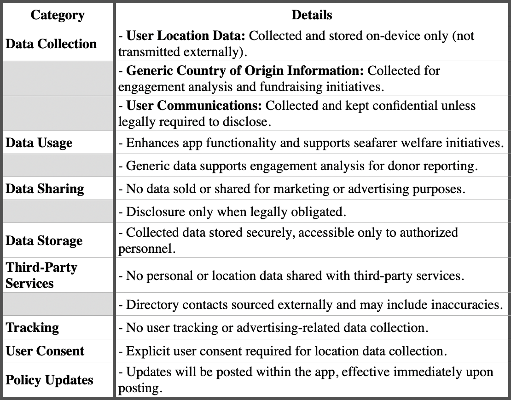

Tied2Shore Privacy Policy:

Privacy Policy for Tide2Shore
Last Updated: [April 10th, 2025]
1. Introduction
Global Maritime Ministries (“we”, “us”, “our”) is committed to protecting your privacy. This Privacy Policy explains how the Tide2Shore app (“App”) collects, uses, and safeguards your information. By using the App, you agree to the practices described in this policy.
2. Information We Collect
User Location Data:
- With your explicit permission, the App collects your precise location data solely on your device. This information is used to enhance app functionality and to further global seafarer welfare initiatives. Importantly, location data is not transmitted out of your device or sent to external servers.
Generic Country of Origin Information:
- We collect only generalized country-level data to analyze app engagement and support fundraising initiatives. This information is not used for targeted advertising or sold to third parties.
User Communications:
- If you contact our development team—for app assistance, prayer requests, or to report issues on board your ship—this communication will remain confidential, except where disclosure is required by law (e.g., mandatory reporting obligations).
3. How We Use Your Information
Enhancing Seafarer Welfare:
- All data collected (location and generic country information) is used exclusively to improve the functionality of the App and to further our mission of providing holistic ministry to seafarers.
Fundraising and Engagement Analysis:
- The generic country of origin data supports our efforts in showcasing app engagement to potential donors.
Confidentiality of Communications:
- Any information provided via direct communication is kept confidential, barring instances of legal obligation.
4. Data Security and Storage
- We implement reasonable technical and organizational measures to protect your data from unauthorized access or disclosure.
- All collected data is stored securely and is only accessible to authorized personnel within Global Maritime Ministries for the purposes outlined in this policy.
5. Third-Party Services and Directory Information
- The App does not send your personal or location data to third-party services.
- The directory provided in the App contains contacts supplied by external sources. Although we strive to maintain the accuracy of this directory, Global Maritime Ministries does not guarantee its accuracy or control any communications that occur outside the scope of the App.
6. Data Sharing and Disclosure
- We do not sell or distribute your data for advertising or marketing purposes.
- Information is only disclosed if required by law, or in cases where mandatory reporting is necessary. In such rare instances, we will take steps to inform you when possible.
7. Changes to This Privacy Policy
- We may update this Privacy Policy periodically. Any changes will be posted within the App and will take effect immediately upon posting. We encourage you to review this policy regularly.
8. Contact Us
If you have any questions, concerns, or requests regarding this Privacy Policy or your personal data, please contact us at:
Email: support@tied2shore.com
Mailing Address:
Global Maritime Ministries Inc.
PO BOX 750787 New Orleans, LA 70175
9. Consent
By using the Tide2Shore app, you acknowledge that you have read and understood this Privacy Policy and agree to its terms.